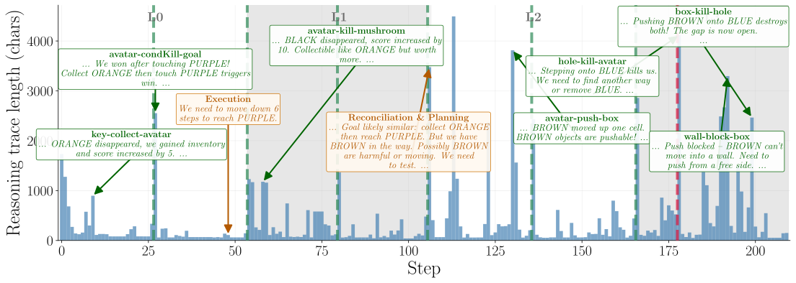
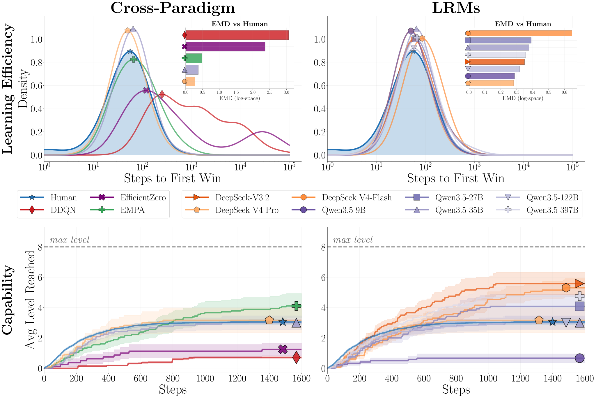
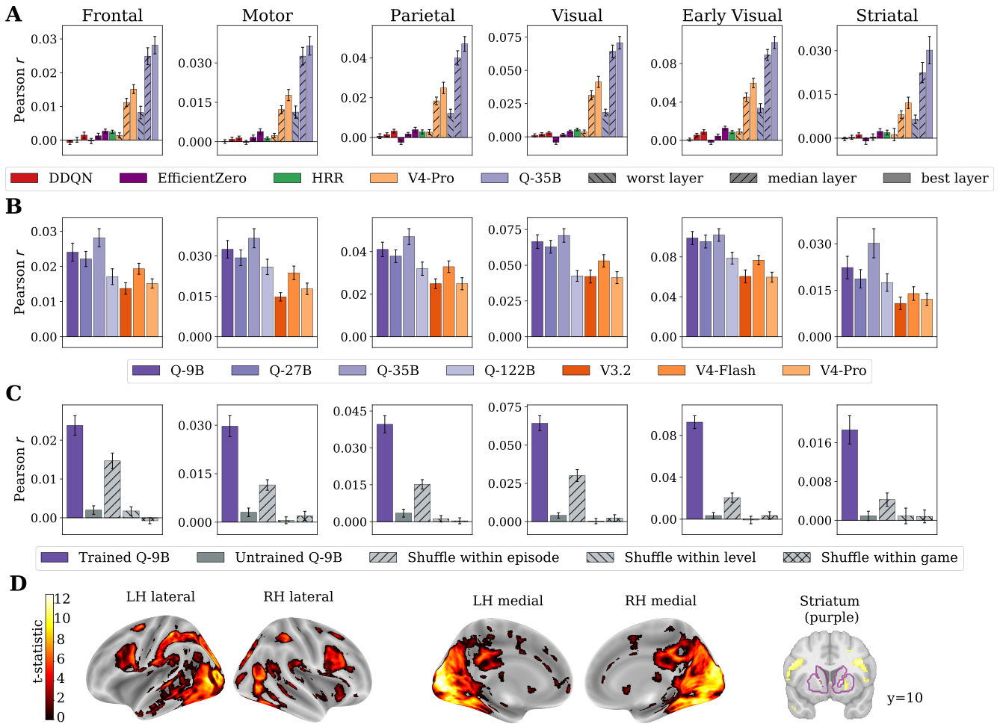

Reason to Play
Behavioral and Brain Alignment Between Frontier LRMs and Human Game Learners
Botos Csaba1*,
Sreejan Kumar2,3*,
Austin Tudor David Andrews1,
Laurence Hunt1,
Chris Summerfield1,
Joshua B. Tenenbaum4
Rui Ponte Costa1+,
Marcelo G. Mattar3+,
Momchil Tomov5+
1University of Oxford, 2Columbia University, 3New York University, 4MIT, 5Harvard University — * Equal first authors, + Equal senior authors
Summary
Humans are remarkably good at picking up new environments: drop someone into an unfamiliar video game and within minutes they are forming hypotheses, testing them, and revising their understanding of how the world works. Can modern AI do the same? We take a set of simple grid-world video games, written in a compact language called VGDL, and have both humans (32 participants, scanned with fMRI) and a suite of frontier Large Reasoning Models play them from scratch, with no rules provided. We then ask two questions: Do the models learn the way humans do? And do they build similar internal representations?On the behavioral side, the best LRMs match human learning curves remarkably well: they discover game rules in roughly the same number of steps humans need and progress through difficulty levels at a comparable rate. On the neural side, the hidden states of these models predict human fMRI BOLD responses across cortical and subcortical regions, the first demonstration that LRM representations systematically align with human brain activity during active game learning. Through targeted ablations we show that what drives the brain alignment is the model's in-context representation of the sequence of game states.
Do Models Represent the Games as Humans do?
The games on this page are the exact same environments used in the experiment, including the randomized colour assignment. Nobody, neither the human participants nor the LLMs, was told what the rules are. On the left side you see a human participant's gameplay (top left), their neural representation evolving during in-context learning (bottom left), while on the (top right) you see what the LLM sees and in (bottom right) how their representation formed for the same gameplay.How does the model think while it plays?
Working with language models has one big advantage over silent neural networks: we can read the model's reasoning. In the copied-reasoning condition, the model's hidden chain of thought is exposed at each step. Below is one such run: DeepSeek-V3.2 playing Bait level 3 with no rules provided. Step through the gameplay yourself, then read the curated reasoning trace underneath. The model proposes candidate object identities, tests them against observed state changes, and revises its understanding when predictions fail, in a way that reads strikingly like how human participants describe their own learning when thinking aloud. Click on the game cards to start the replay, or the titles to watch the full traceAbove is the model's actual gameplay: each frame is one action chosen from the same observation a human participant would see, and the text panel prints the complete chain of thought the model wrote down before picking it. For illustrating if there are any similarities between human Response Times (RT), we stagger the gameplay here by waiting until the model Reasoning Traces (RT, convenient huh?) is completed in the text panel. Step through the run, open the Game Description flap to peek at the rules the model never saw, and watch how its hypotheses about object identities evolve across attempts.
The figure below distils the same run into a short, readable narrative: only the moments where the model commits to or revises a hypothesis are kept, and arrows show how each observation feeds back into the next decision. Read it as a "think aloud" transcript: the live viewer is the primary source, the figure is the curated commentary.

How well do the matches hold up?
The viewer above and the reasoning trace are striking qualitatively, but a research claim needs more than a single visually compelling case. We need to quantify two things: how closely the models behave like human game-learners, and how closely their internal representations match human brain activity.Quantifying behaviour
To compare learning behaviour, we measure two things: (i) rule-discovery time, the number of steps each agent takes to first satisfy the win condition of a game; and (ii) curriculum progression, how far through nine difficulty levels each agent advances under blocked advancement (two consecutive wins required to move on). Human participants, deep-RL baselines (DDQN, EfficientZero, EMPA) and eight frontier LRMs all play the same games under the same conditions.
Quantifying representational similarity
To compare internal representations, we extract hidden-state activations from each LRM during gameplay and use them as regressors in a voxelwise encoding model that predicts the human fMRI BOLD signal, with separate regularisation for the model features and the nuisance regressors (game/level identity, button presses, time). We then average best-layer Pearson correlations within functional region groups. Targeted ablations (prompt-only, shuffled-features, random-init controls) confirm that the signal comes from the model's in-context representation of the game state, not from surface-level prompt statistics or chance correlations.